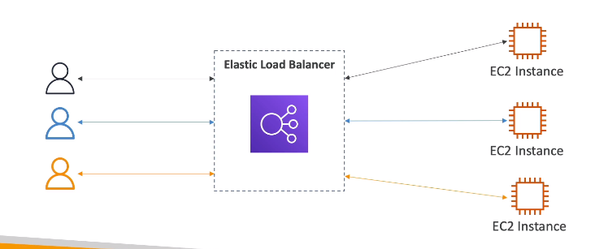
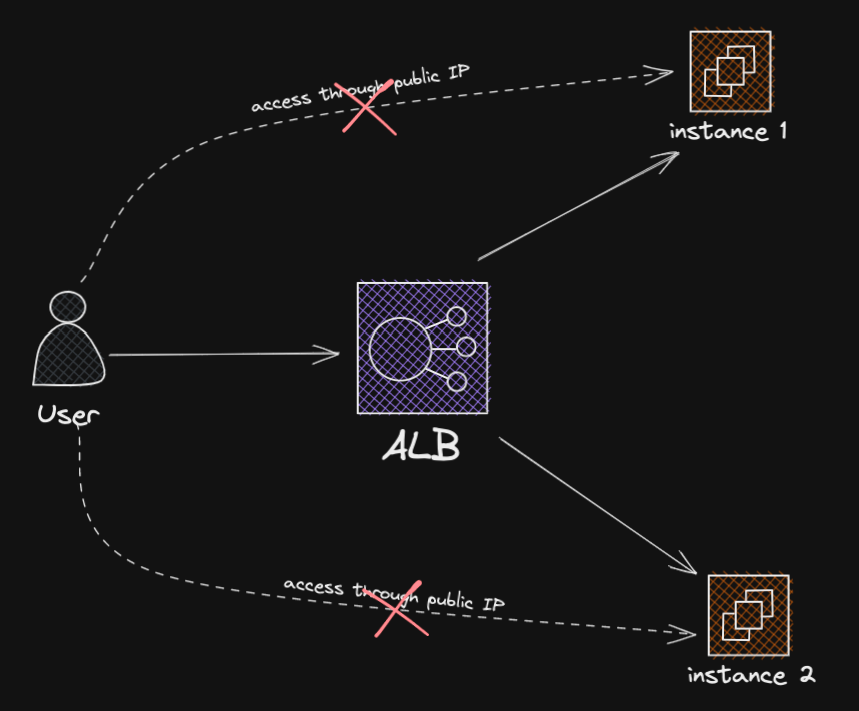
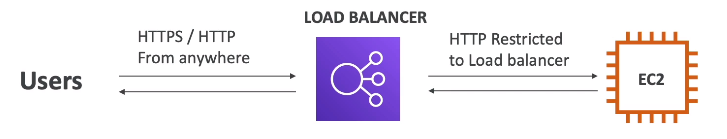
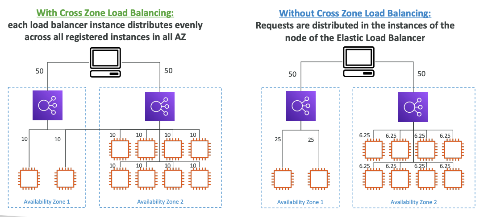
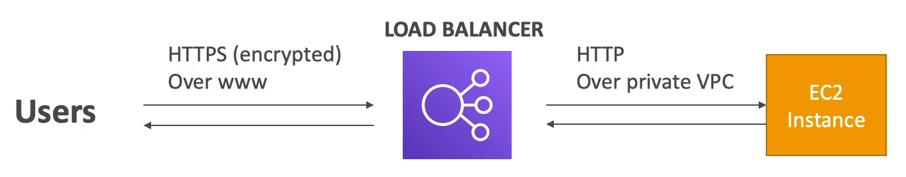

🌿 What?

- Là dịch vụ phân phối tải tới các instances của hệ thống.
🌿 Why to use?
- Phân phối tải đều cho những instances của hệ thống, tránh tình trạng quá tải.
- Expose một điểm truy cáºp(DNS) duy nhất cho ứng dụng
- Vẫn hoạt động bình thường khi có lỗi ở một instance.
- Cung cấp SSL cho web
- Tách biệt được public traffic và private traffic.
- Thực hiện heath check thường xuyên cho các instances.
🌿 Types of load balancer on AWS
- Nên dùng mấy cái gen mới, nó sẽ cung cấp nhiều tÃnh năng mới hơn.
- Một số load balancers có thể setup private hoặc public ELBs.
🃠Classic Load Balancer
- v1 - 2009 - CLB (có warning deprecated nhưng vẫn available)
- HTTP, HTTPS, TCP, SSL
🃠Application Load Balancer
-
v2 - 2016 - ALB
-
Hoạt động ở layer-7(Application) - HTTP
-
Hỗ trợ redirect(vd như từ HTTP sang HTTPS)
-
Routing
- Dựa theo path trên URL
- Dựa theo hostname trên URL
- Dựa và o query string, hearders
-
ALB phù hợp với micro services và app chạy trên container(Docker || Amazon ECS)
-
Có tÃnh năng ánh xạ cổng để điều hướng đến một cổng động trong ECS.
-
Target groups:
- EC2 Instances (có thể được quản lý bằng Auto Scaling Group) - HTTP
- ECS tasks (quản lý bởi ECS) - HTTP
- Lambda functions - in a future lecture
- IP Addresses - phải là private IPs
-
Có thể định tuyến đến nhiều target groups
-
Health checks là một target group.

-
Edit inbound rules Security Group của EC2 Instances để client phải truy cáºp qua ALB chứ không được truy cáºp trực tiếp qua publicIP của instance. được truy cáºp trực tiếp từ public IP của Instance.
🃠Network Load Balancer
- v2 - 2017 - NLB
- Hoạt động ở layer-4(Transport)
- Chuyển tiếp TCP & UDP traffic tới các instances.
- Mỗi giaay xỠlý được hà ng triệu requests.
- Độ trễ thấp hơn so với ALB (~100ms vs 400ms)
- Có một static IP cho từng AZ, có thể sề dụng ElasticIP(hữu Ãch nếu dự án cần chỉ định IP)
- Không được hỗ trợ trong free tier.
- Target groups:
- EC2 Instances
- IP Addresses - must be private IPs
- Application Load Balancer
- Health check hỗ trợ qua các giao thức TCP, HTTP, HTTPS.
🃠Gateway Load Balancer
- v3 - 2020 - GWLB
- Hoạt động ở layer 3(Network layer) - IP Protocol
- Để triển khai, scale và quản lý một cụm network virtual applicances trong AWS, vd như Firewalls, Intrusion Detection and Prevention Systems, …
- Kết hợp của:
- Transparent Network Gateway - single entry/exit cho tất cả traffic
- Load Balencer - phân phối traffic tới các virtual appliances.
- SỠdụng GENEVE protocol trên cổng 6081
Note
Khác với ALB và NLB, GWLB mục Ä‘Ãch phân tải cho cụm ứng dụng ảo thực hiện các công việc ngăn ngừa các traffic độc hại vd như Firewall
🌿 Security Group

🌿 Sticky Session(Session Affinity)
- Là tÃnh năng điều hướng requests của cùng một người dùng đến cùng một instance. Đảm bảo tÃnh nhất quán trong phiên là m việc cùa người dùng và tránh phân tán dữ liệu trên nhiều instances.
- TÃnh năng hoạt động trên CLB & ALB
- Gềi Cookie tới client, với mỗi request sau sẽ được gắn cookie để xác định phiên của người dùng, ELB sẽ thực hiện điều hướng tới cùng một instance. Khi cookie hết hạn, người dùng có thể được điều hướng qua một instance khác.
- Use case: trong TH chúng ta không muốn thất lạc dữ liệu trong phiên hoạt động của người dùng.
- Tuy nhiên, tÃnh năng nà y cũng có khả năng gây nên mất cân bằng tải do nhiều user sticky trên một instance chẳng hạn.
- Cookie name:
- Application-based Cookies
- Custom cookie
- Application cookie
- Duration-based Cookies
- Application-based Cookies
🌿 Cross-Zone Load Balancing
- Cân bằng tải cho tất cả các instances ở trên nhiều AZs. 
- ALB
- Mặc định được báºt(có thể tắt ở phần edit attributes của target group)
- Không phải trả phÃ
- NLB & GWLB
- Mặc định tắt
- Báºt lên thì phải trả tiền
- CLB
- Mặc định tắt
- Không phải trả nếu báºt
🌿 SSL Certificates

- SỠdụng X.509 certificate(SSL/TLS server certificate)
- Có thể quản lý các certificates bằng ACM - Amazon Certificate Manager
- Có thể tự tạo certificates.
- HTTP listener:
- Bạn cần có một default certificate
- Bạn có thể thêm một danh sách các certs để hỗ trợ cho multiple domains
- Clients có thể sỠdụng SNI - Server Name Indication để chỉ định hostname
- Có khả năng chỉ dịnh một chÃnh sách bảo máºt để hỗ trợ cho những phiên bản cũ SSL/TLS.
🃠Server Name Indication
- Giải quyết vấn đề phải load nhiều chứng chỉ SSL trên cùng một web server.
- Giao thức mới, yêu cầu người dùng phải chỉ định hostname của tên máy chủ target trong lần đầu thực hiện khởi tạo SSL handshake.
- Server sẽ tìm ra đúng chứng chỉ hoặc trả vỠmặc định.
- Chỉ work với ALB & NLB, CloudFront
🌿 Connection Draining
- Feature naming:
- Connection Draining - for CLB
- Deregistration Delay - for ALB & NLB
- Là tÃnh năng giúp cho ELB dừng gềi traffic tới một instance đang có vấn đề(unhealthy, deploy lại) nhưng vẫn giữ kết nối tới instance đó.
- Có thể tắt tÃnh năng nà y đi